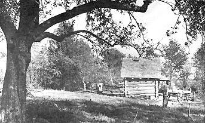
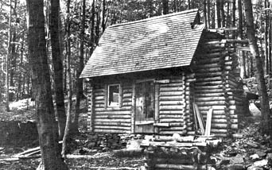

If you think the back-to-the-land movement is attracting only young freaks, misfits, the alienated and disenchanted revolutionaries . . . the Christian Homesteading Movement will set you straight. Membership is for god-fearing people only, though the rest of us are welcome to learn and participate at CHM's homesteading "school."
Like the Amish, Mennonites and other fundamentalists, the CHM believes living close to nature and to the land, and working only with hand tools, gives life the simplicity most conducive to spiritual development. Unlike the Amish and Mennonites, however, the CHM is a relatively new group. It was founded in 1961 and has yet to achieve its goal; the establishment of full-fledged homesteading communities.
The CHM school and headquarters is a 68-acre farm on top of one of the rolling hills of south central New York, just outside the town of Oxford. I first learned of CHM in the Contact columns of MOTHER and when I saw a full-page article about the movement in an upstate daily, I decided to check it out.
Fortunately I didn't show up unannounced, otherwise I would have been required to spend a day sawing wood. Unannounced visitors must saw wood for a day or they are invited to leave. It's a rule that keeps tourists and crashers away.
There are other rules, too: no cameras, no "gadgets" of any kind (flashlights, radios, etc.), no hard liquor or drugs, no cars or machinery and no "profanity" or vulgarity. Tobacco is "tolerated but not encouraged" and women wearing anything but kneelength skirts and dresses are not allowed to visit. Women in shorts or pants "will be advised to go home and get dressed properly."
The homesteading school is not managed-as you might expect-by hoary Bible thumpers but by bearded, 28-year-old Richard Fahey, who has apparently. been the only continuing resident of the farm-school. I arrived during one of Richard's Saturday morning classes on homesteading skills.
Seven of us huddled in a nine-by-nine log cabin used as a tool shed, animal shelter and "temporary" living quarters. (I later learned there are only two other structures on the farm: a four-by-eight chicken coop and a seven-by-twelve log cabin containing the CHM's 1,000-volume homesteading library) while Dick, 20ish, one of the transient residents, gave a lesson about the care, raising and habits of bees. Then Richard brought in one of the school's two goats for a talk about them and a demonstration in milking. At the end of each "class", both teachers randomly called on us to answer questions about the lesson. What would happen if one of us didn't have the right answer? Everyone had the right answer.
After-classes, we inspected the farm's four bee hives, named the Amish, Benedictines, Christian Homesteaders and Dominicans. I chatted with another visitor, with Richard and a couple of transients, then went walking in the fields to pick wild strawberries with Dick. He had a copy of an Alan Watts book in his pocket, said he was "on the road" and came to the farm once or twice a year, staying a week at a time. I don't know how it came up, but Dick expressed some admiration for Tim Leary and I began to suspect he wasn't a fundamentalist. I wondered what Dick was doing there and what it was like to live at the Christian Homesteading Center.
"An average day," he said, "begins usually before sunrise with Psalms, continues with a breakfast of cattle-grade corn meal and powdered milk-which takes getting used to-and is followed by a full day of work at a comfortable pace."
The work might include trimming apple trees, cutting firewood, gardening, gathering herbs or washing clothes. There is no electricity or running water, so water has to be hauled up from a spring.
Grace is said before meals. Aside from corn meal, the diet consists of potatoes, oat meal, squash, beans, peas, beets, turnips, wild and domestic greens, apples, nuts, wild berries, goat's milk and herb teas. Hunting small game is allowed, but the farm's residents are usually vegetarians.
After lunch there is an hour for discussion, reading (quietly or aloud), recreation (usually horse shoes or whittling) or a nap. Work then continues until supper. After that a few chapters of the Bible are read and discussed. The last act of the day is the singing of Psalms and a prayer.
"Richard's view of life is that we must seriously attempt to better ourselves continuously or face Hell," Dick said. "Although he's friendly, his scene gets heavy, especially after a guest passes a little time here.
"The novice with serious or semi-serious intentions can get a lot of good technical advice if he or she cooperates to a degree. Richard's outlook on religion is interesting and inspiring, and he makes a fine friend. It's well worth a letter and a visit of some length."
A talk with Richard Fahey and a survey of CHM's literature makes it clear that these homesteaders are conservative politically as well as religiously, though ostensibly the group has no political character. However, articles extolling private enterprise and individualism-for example-have appeared in the movement's bi-monthly paper, The Homesteader, along with attacks on the "Welfare State." Patriarchy, private property, voluntary poverty, celibacy and virtually total abstinence from the money economy (bartering wherever possible) are encouraged.
The movement is multi-denominational, though the Catholic division is apparently the only active one. The group has a constitution and a governing Council of Regents. This is probably the most revealing paragraph in CHM literature:
We are concerned with the perfection of each individual, knowing that the world can never be reformed without the reformation of self first. We believe that, while many good and selfless people are striking at the branches of social evils, the root-the stability of the family-is neglected. Most people are not, can not, be social reformers, but they are parents and have the sacred duty to form their children and themselves in the likeness of God. Failing in this, it matters little how many hospitals they build, books they write, or cures they discover. Succeeding in this, they have the success that counts for eternity.
Anyone who wants to learn homesteading skills at the CHM farm will work under Richard's supervision. Ile's an ex-paratrooper and has expressed admiration for the Green Berets.
"You should have an open mind only so you can find and close around something substantial," he says. If that doesn't sound like an attitude you can warm up to, perhaps a visit to the CHM farm isn't for you. You might better visit a different homesteading center. The Heathcote School of Living, Rt. 1, Box 129, Freeland, Md. 21053-for instance-has no religious affiliation and radicals and longhairs will be comfortable there.
But you don't have to accept the CHM philosophy nor visit the farm to gain valuable help from the movement. Nonmembers may borrow by mail from the CHM's thousand-volume homesteading library. For two 6-cent stamps you can get a list of the books available and there is no charge for the service except a $5 deposit that is returnable after a year. Correspondence courses are occasionally available on homesteading topics like herbalism and organic gardening, and there is no charge except postage.
In mid-summer the CHM hopes to sponsor its second Homesteader Training Week. This will probably include: Processing and spinning wool; predicting weather; horse shoeing; goats for the homestead; how to start a homestead; identification and uses (mainly medicinal) of wild plants; the care, harnessing and use of work horses; bees, honey and wax; skinning and tanning hides; primitive pottery making.
Again, there are no fees but participants must bring their own food and camping equipment and must be willing to accept work to insure the week's success. This work may include washing dishes, disposing of garbage or digging a latrine. Enclose a stamp with all inquiries.
Finally, the CHM's bi-monthly newsletter, The Homesteader, is available to anyone for $1 a year (renewals 50 cents). It's a one or two-page mimeographed sheet of, quotations, recipes, CHM news, letters, poetry, and religious and psuedo-philosophical raps. And there are always how-to tips for homesteaders. Below is a scavenger's collection of the Best of The Homesteader, reprinted by permission, The Homesteader, RD 2, Oxford, N.Y., 1964-1970.
Visitors are welcome at the CHM farm, but be sure to make arrangements in advance. Otherwise you'll get an impromptu lesson in woodsmanship.
The bark of trees, which can easily be stripped in the spring, has many uses. Hemlock, birch, maple and other barks make good temporary roofing material.
Both black birch and sassafras bark of either the root or trunk make pleasant-tasting teas. Slippery elm and basswood bark will boil up into thick nutritious soups. Basswood bark, when beaten and twisted, also provides rope.
Any bark like oak, sumac or hemlock, that contains tannin can be used for tanning hides. Sumac bark is especially used for tanning goat skins which, when tanned, are called Morocco leather.
The medicinal use of various barks is almost endless. Pine bark can be used to treat coughs, colds, and chest diseases. Choke cherry is a remedy also for coughs and for sciatica. White poplar makes a quinine substitute without the usual side effects. Sumac acts effectively on diarrhea.
Unless you intend to clear some land of trees, take care in obtaining bark lest you kill your trees. Bark should be taken from limbs you trim off, or from the trunk in strips up and down the tree-not around it as this "girdles" and kills the tree.
The Homesteaders' library and "retreat" made of split logs
Anyone in the backwoods can supplement his diet with vitamin C and other essential vitamins and minerals with alfalfa sprouts. Put two tablespoons of the seeds in a quart jar filled half full of water and let soak for 6 to 12 hours. Drain the water and each morning and evening thereafter, rinse with water. After 3 days spread them a half inch thick on a tray and sprinkle lightly with water. Expose them to indirect sunlight.
In a short time the tops will grow upward and turn a pretty green giving them an appetizing look and a high content of chlorophyll that contributes so much to its remarkable healing qualities. Alfalfa sprouts are high in vitamins A, B, B complex, C, D, E, G, K, and U, plus calcium, phosphorus, iron and other minerals. The vitamin-rich sprouts are delicious any way you serve them.
Read the article on "Vitamin-rich Sprouts" in Catharyn Elwood's Feel Like a Million for further information.
Turn water upon unslacked lime and in a short time a scum will rise to the surface. Then drain off all the water and add fresh water, repeating the operation until no more scum rises. Stir up the lime and water and put in the eggs so they are completely covered. This wholly excludes the external air and preserves the eggs in the finest order.
The age of a horse can approximately be told by looking at its teeth. The more triangular they are, the older the horse is.
Butter can be preserved indefinitely in hot or cold weather by melting it down after it is churned. The impurities sink to the bottom of the pot in a thin layer while the rest becomes pure butter.
When the butter becomes hard turn it over and slice off the impurities. Then you can put the butter in the pantry if you like.
An effective garden spray can be made from the juice of either onion or garlic.
Stones put into the fire during the day will give off heat through the night.
Jerky can be made from lean beef or venison cut in long strips and dipped in boiling brine a few seconds, then hung up to dry on the kitchen rafters.
Leaves taken from strong-growing squash, pumpkin or cucumber vines are effective fly repellents for cattle. The crushed leaves are rubbed on their backs and necks.
Acorn squash, along with other winter squashes, are practical vegetables. Americans inherited them from the Indians. Not only do they store well through most of the winter (usually in a warm attic), but they can also be sliced thin, threaded on a string, and dried to be preserved indefinitely. And don't throw away the seeds! They are as good as meat in protein and fat. Try them dried and salted or baked right in the half shell.
The large horns of cows and steers have many uses besides the well known powder horn. When horns are soaked in hot water for a time they become soft and flexible, much like fingernails do when they are kept in dishwater. These flexible horns can be cut and flattened out to make many translucent plastic-like objects. Some of the most common uses for horn were for making combs, lantern (from "lant-horn") "glass", and horn cups.
Seeds started in eggshells cut down on the usual transplant shock because the seedlings can be planted eggshell and all in the spring.
Autumn is the last opportunity to gather wild teas for the winter and a good one at that. The sunny, clear and breezy autumn midday is just the time to gather tea plants.
Gather some raspberry leaves, rose leaves and rose hips (the red berries), blackberry leaves, strawberry leaves, the mints, sweet goldenrod (it tastes like anise), and alfalfa. There are many more but these are the most pleasant tasting and familiar plants.
Raspberry, rose, blackberry and strawberry leaves taste most like Oriental tea. Rose leaves have the wonderful aroma of beeswax candles. The mints are good by themselves or added to other teas. Goldenrod has a unique and robust flavor while alfalfa is like green tea, drunk more for the vitamins it contains than for its flavor.
The tea plants are tied up in bunches and hung in a dry, airy spot to dry. The best places are in the attic and over the woodstove in the kitchen.
When the tea leaves are completely dry put them in air tight containers and store.
For all the different teas mentioned, use a teaspoon per cup of boiling hot water and let them steep, covered, from 5 to 20 minutes.
One of these is bound to become a favorite that you will use every day!
Save any tin cans you come across to enrich the soil with iron. Burn them in a hot fire, flatten and then bury them in the garden or three feet apart around trees at the drip line.
Many of our readers will recall that during the Second World War milkweed was "domesticated" and planted as a field crop for its downy seed-carrying floss for use in mattresses, pillows and life jackets. This wasn't a new discovery-the pioneers were familiar with the virtues of milkweed a hundred years ago...
Milkweed is a very familiar plant, establishing itself in city and suburban weed patches, along country roadsides and in the fields. Its sticky milky sap is well known, although there are related plants with milky juice that are dangerous. The leaves of milkweed are opposite each other on the stalk, and are smooth, oval and thick.
All parts of the milkweed are edible. Young shoots that appear in late May and early June can be used like asparagus, although they won't taste like asparagus. All parts of the plant have the same-"milkweed" is the only word for it-flavor. It's a bit different from anything else you've eaten, so it takes two or three meals to develop a liking for it. But most people do like it.
The next parts ready to eat are the tender top leaves and the unbloomed green flower heads. These are ready to pick at the end of June through July, and have the appearance and texture of broccoli.
When the flowers bloom dull red-purple, you can try your hand at making sugar or syrup from them. We haven't tried this yet, but it is said some people have met with varying success. Gather the flowers in the morning dew and boil them in water. And let us know how it comes out!
In August gather the tender seed pods. They resemble okra.
The shoots, leaves, green flowers, and pod are all prepared the same way. Boil two pots of water. Boil the milkweed in the first pot for one minute or more and dump off the water; then do the same in the second pot. Butter and salt or cream them.
And there's more. Milkweed "milk" is one of the many cures for warts that may-or may not-work for you. It did for me! Just apply the juice to the warts.
The roots, steeped in boiling hot water like tea, help relieve coughs, fevers, and nasal catarrh; drunk cold, this extract helps relieve an aching back and irritation in the genito-urinary tract.
Last, I understand that the seed floss can be spun into thread and woven into cloth. This is something we will try some day and let you know how it turns out.
Milkweed is a plant worth putting in the garden if none grows wild in your area. I'll be happy to mail a few seeds this fall to anyone who sends in a stamped envelope.-RLJ Fahey.
For diarrhea in cattle, use clean hardwood ashes. For newborn calves, sprinkle a little on the milk. I have no measurement for this, but if you don't get enough the first time give some more at the next feeding again for up to three or even more doses. I have used this for a cow, about a pint in a quart bottle with water. Two doses, a day apart, cured a condition the local vet couldn't.
Kerosene is a good and economical disinfectant when castrating and for minor cuts, etc.
Keeping plenty of salt before the stock when on lush pasture helps prevent bloat.
Make a bridle of a piece of string and a stick of wood for a bit and if you see a cow that is bloated but not in the last stages, put the bridle on the cow and as she chews on the stick she will burn the gas accumulation in her stomach.
If the cow is in the last stages, there may be no alternative to tapping the cow, but this has not been too satisfactory for me.
To cure milk fever in a cow, disinfect a goose quill and tape it to a tire pump. After disinfecting the cow's teats, pump her udder so it fills out but not too hard. This will prevent her from secreting milk while the calcium in her body rapidly rebuilds itself. If this helps at all, a cow that you think is dying will be up and looking well in a half hour. Never milk a fresh cow dry for a few days and you can prevent a lot of milk fever.
Don't dehorn cattle that have been fed any amount of sweet clover hay as this prevents the blood from clotting.-Leo Johannessohn.
A SOUR DOUGH RECIPE
4 cups flour
2 teaspoons salt
2 tablespoons sugar
To the above add 3 or 4 cups of potato water and let stand loosely covered in a non-metal container for 2 days at 89 to 100 degrees. After this time it should be bubbly and sour smelling.
Mix this "starter" with flour and water for either bread or pancakes. Save one cup of this dough for the next batch. (Do this every time you bake.) Next, add any other ingredients you'd like and then let it raise in a warm place overnight.
Skins from wild and domestic animals are made into useable leather through the process of tanning.
The Indians tanned their skins by curing them in a smoke house for several months. The skins were first cleaned and soaked in lye water obtained from ashes. This loosened the hair, making it easy to scrape off.
The early Americans used lime water instead of lye to decompose the hair, and then after scraping, laid the skins in watertight boxes or vats with ground oak bark between each layer. They added water to the vats and left the skins to cure for six months.
Making cups, bowls and pots from clay is one of the oldest and simplest crafts.
Raw clay can be found almost anywhere-in the subsoil, along river banks, or at the bottom of creek beds. Once you have found a good source you are ready to make pottery.
If the clay is almost pure it can be used as it is. If it is mixed with stones and leaves, let it dry out, crush it into a fine dust, and screen it. (Horse hairs from tail and mane make good screen.)
A finely crushed "tempering" material can be mixed with the raw clay to help prevent it from cracking when it is fired. Tempering can be made from old pottery, clam shells or lava.
The clay dust and tempering are next mixed with water and kneaded to a dough-like consistency. If the clay is too wet and sticky, either add more powder or work it in the sun. It is best to work in the shade once it is just right for working.
Make something simple like a handle-less cup or a small bowl for your first try. Roll out coils and wrap them around one at a time to build up your piece evenly.
Pinch and smooth the piece to a solid evenness with your fingers.
When it is all finished let it become perfectly dry but don't leave it in the hot sun or it may crack.
Under intense heat clay turns into a form of rock. The last step to make a lasting cup or bowl is to build a bonfire over and around your pottery.
The pottery will blacken here and there if you put it directly into the fire (but this doesn't hurt it structurally), so you may want to cover it with an old tin pail or use an oil drum for a kiln. Rocks will also do.
In any case, it is how hot and long-lasting your fire is that matters. The pottery must cool slowly and it is good if the wood ashes from the fire cover it while it is cooling. This takes about twelve hours or more.
A good time for this big fire is a night you would like to celebrate, like a birthday.
|
 |
 |
|